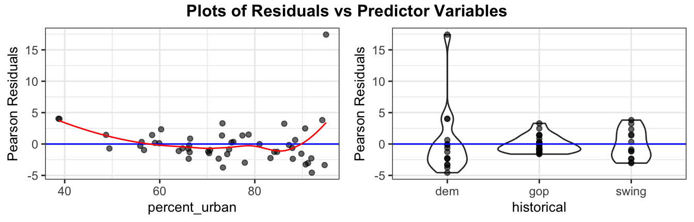
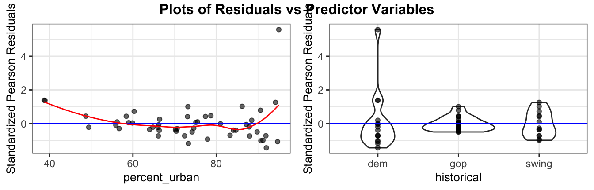

full_glm <- glm(laws ~ percent_urban + historical, data = equality_index,
family = "poisson")Day 26: Overdispersion and inference for Poisson regression
Recap: where we left off
We are modeling the number of anti-discrimination laws in each state using percent_urban and historical (dem, gop, or swing) with a Poisson regression model:
\[Y_i \sim \text{Poisson}(\lambda_i) \qquad\qquad \log(\lambda_i) = \beta_0 + \beta_1 \text{percent\_urban}_i + \beta_2 \text{gop}_i + \beta_3 \text{swing}_i\]
| term | estimate | std. error | z | p-value |
|---|---|---|---|---|
| (Intercept) | 0.7590 | 0.3269 | 2.32 | 0.020 |
| percent_urban | 0.0314 | 0.0037 | 8.42 | <0.001 |
| historicalgop | -1.6121 | 0.1332 | -12.10 | <0.001 |
| historicalswing | -0.8288 | 0.1015 | -8.17 | <0.001 |
Example: In binomial logistic regression, what is the response variable? How is a Poisson count different?
Example: Interpret the percent_urban coefficient in context.
The Poisson model makes three assumptions:
- Linearity: \(\log(\lambda_i)\) is a linear function of the predictors
- Mean = Variance:
- Independence: the observations are independent
Today: what do we do when the second assumption fails?
Overdispersion
NoteOverdispersion
Overdispersion means the data are more variable than a Poisson model allows: \(Var(Y_i) \underline{\hspace{1cm}} \lambda_i\).
- Typical causes: counts that are clustered, differences between units that we haven’t measured, events that are not independent.
- Consequence: the Poisson standard errors are too ______________, so confidence intervals are too ______________ and p-values are too ______________.
Pearson residuals
NotePearson residuals for a Poisson model
\[\text{Pres}_i = \frac{Y_i - \widehat{\text{mean}(Y_i)}}{\widehat{SD(Y_i)}} = \underline{\hspace{4cm}}\]
- If the \(\widehat\lambda_i\) are big enough (about 5 or more), the Pearson residuals behave approximately like draws from a ______________ distribution if the Poisson model is correct.
- If the data are overdispersed, the standard deviation of the Pearson residuals will be ______________
resid_xpanel(full_glm, type = "pearson", smoother = TRUE, nrow = 1)
What are we looking for in these plots?
Goodness-of-fit test
Just as in binomial logistic regression, we can test whether the model fits using the Pearson \(\chi^2\) statistic:
\[X^2 = \sum_{i=1}^n \frac{(Y_i - \widehat\lambda_i)^2}{\widehat\lambda_i} = \sum_{i=1}^n \text{Pres}_i^2\]
NoteGoodness-of-fit test
Hypotheses: \(H_0\): ______________________________ vs. \(H_a\): the model is inadequate
Test statistic: \(X^2\)
Reference distribution: \(\chi^2\) with \(df =\) ______________________________
p-value: the area ______________ \(X^2\) (upper tail)
X2 <- sum(residuals(full_glm, type = "pearson")^2)
X2[1] 516.1012df.residual(full_glm)[1] 46To find the p-value:
1 - pchisq(____, ____)Conclusion:
WarningAre the means big enough?
The \(\chi^2\) approximation (for both the test and the Pearson residuals) needs the fitted means \(\widehat\lambda_i\) to be large enough (about 5 or more).
summary(fitted(full_glm)) Min. 1st Qu. Median Mean 3rd Qu. Max.
1.962 3.532 7.267 13.460 20.429 42.016 Should we trust the test here? Why or why not?
Estimating the dispersion parameter
If \(X^2\) is much bigger than \(n - (p+1)\), the data are overdispersed. We can measure how much with the dispersion parameter \(\psi\):
NoteQuasipoisson model
\[Var(Y_i) = \psi \lambda_i \qquad\qquad \widehat\psi = \frac{X^2}{n - (p+1)}\]
Calculate \(\widehat\psi\) for the equality_index model, and say what it means in context:
Fitting the quasipoisson model
full_quasi <- glm(laws ~ percent_urban + historical, data = equality_index,
family = "quasipoisson")| term | estimate | std. error | t | p-value |
|---|---|---|---|---|
| (Intercept) | 0.7590 | 1.0948 | 0.69 | 0.492 |
| percent_urban | 0.0314 | 0.0125 | 2.51 | 0.015 |
| historicalgop | -1.6121 | 0.4463 | -3.61 | <0.001 |
| historicalswing | -0.8288 | 0.3399 | -2.44 | 0.019 |
Compare with the Poisson fit:
| term | estimate | SE (Poisson) | SE (quasi) | ratio |
|---|---|---|---|---|
| (Intercept) | 0.7590 | 0.3269 | 1.0948 | 3.3496 |
| percent_urban | 0.0314 | 0.0037 | 0.0125 | 3.3496 |
| historicalgop | -1.6121 | 0.1332 | 0.4463 | 3.3496 |
| historicalswing | -0.8288 | 0.1015 | 0.3399 | 3.3496 |
- The estimates ______________ change.
- Every quasipoisson SE is the Poisson SE multiplied by ______________ \(=\) 3.35.
- Test statistics are compared to a ______________ distribution (with \(n-(p+1)\) df) instead of a \(N(0,1)\) distribution.
Residuals for the quasipoisson model
The ordinary Pearson residuals still use the Poisson standard deviation, so they still look overdispersed:
resid_xpanel(full_quasi, type = "pearson", smoother = TRUE, nrow = 1)Standardized Pearson residuals use the quasipoisson standard deviation \(SD(Y_i) = \sqrt{\psi\lambda_i}\) (and also adjust for leverage):
resid_xpanel(full_quasi, type = "stand.pearson", smoother = TRUE, nrow = 1)
Does the quasipoisson model fix the problem?
Inference for the coefficients
NoteConfidence intervals and tests for \(\beta_j\)
| Poisson | Quasipoisson | |
|---|---|---|
| Confidence interval | \(\widehat\beta_j \pm z^* SE(\widehat\beta_j)\) | \(\widehat\beta_j \pm t^*_{n-(p+1)} SE_{quasi}(\widehat\beta_j)\) |
| Test of \(H_0: \beta_j = 0\) | \(z = \dfrac{\widehat\beta_j}{SE}\), compared to \(N(0,1)\) | \(t = \dfrac{\widehat\beta_j}{SE_{quasi}}\), compared to \(t_{n-(p+1)}\) |
We build intervals on the log scale first, then exponentiate. For a \(C\)-unit increase in \(x_j\), multiply the estimate and the SE by \(C\) before exponentiating:
\[\left(e^{C\widehat\beta_j - z^* \cdot C \cdot SE},\;\; e^{C\widehat\beta_j + z^* \cdot C \cdot SE}\right)\]
Example: Calculate 95% confidence intervals for the effect of a 10 percentage point increase in percent_urban under both models.
b <- coef(full_glm)[2]
se_pois <- summary(full_glm)$coefficients[2, 2]
se_quasi <- summary(full_quasi)$coefficients[2, 2]
tstar <- qt(.975, df.residual(full_glm))Interpret the quasipoisson interval in context. Which interval is wider, and which should we trust?
Inference for the mean count (\(\lambda\))
To estimate the mean number of laws, \(\lambda\), for a particular state:
- Predict \(\widehat\eta\) and its standard error on the link (log) scale
- Build the interval on the log scale: \(\widehat\eta \pm t^* \cdot SE(\widehat\eta)\) (use \(z^*\) for the Poisson model)
- Exponentiate the endpoints
predict(full_quasi, newdata = data.frame(historical = "dem", percent_urban = 73.3),
type = "link", se.fit = TRUE)$fit
1
3.057568
$se.fit
[1] 0.2312448
$residual.scale
[1] 3.349567Example: Minnesota historically votes dem and has 73.3% of its population in urban areas. Find a 95% confidence interval for the mean number of laws in states like Minnesota.
Why is the interval built on the log scale rather than the count scale?
How would the interval from the standard Poisson model compare?
Testing nested models: the drop-in-deviance test
NoteLikelihood ratio (drop-in-deviance) test
Hypotheses: \(H_0\): ______________________________ vs. \(H_a\): at least one of these coefficients is not 0
Test statistic: \(G = D_{\text{Reduced}} - D_{\text{Full}}\), where \(D\) is the ______________ of each model
Reference distribution:
- Poisson: \(G \overset{\cdot}{\sim} \chi^2_d\), where \(d\) is the number of coefficients being tested
- Quasipoisson: \(F = \dfrac{G/d}{\widehat\psi} \sim F_{d,\; n-(p+1)}\)
Example: Is historical needed in the model, after accounting for percent_urban?
reduced_glm <- glm(laws ~ percent_urban, data = equality_index, family = "poisson")
reduced_quasi <- glm(laws ~ percent_urban, data = equality_index, family = "quasipoisson")
anova(reduced_glm, full_glm, test = "LRT")Analysis of Deviance Table
Model 1: laws ~ percent_urban
Model 2: laws ~ percent_urban + historical
Resid. Df Resid. Dev Df Deviance Pr(>Chi)
1 48 601.82
2 46 413.49 2 188.32 < 2.2e-16 ***
---
Signif. codes: 0 '***' 0.001 '**' 0.01 '*' 0.05 '.' 0.1 ' ' 1anova(reduced_quasi, full_quasi, test = "F")Analysis of Deviance Table
Model 1: laws ~ percent_urban
Model 2: laws ~ percent_urban + historical
Resid. Df Resid. Dev Df Deviance F Pr(>F)
1 48 601.82
2 46 413.49 2 188.32 8.3927 0.0007811 ***
---
Signif. codes: 0 '***' 0.001 '**' 0.01 '*' 0.05 '.' 0.1 ' ' 1State \(H_0\), \(d\), and your conclusion under each model. Why is the quasipoisson test less extreme?
Summary
- Poisson regression assumes the mean and variance are ______________. Overdispersion means the variance is larger, and the Poisson SEs are too ______________.
- Check with the Pearson \(X^2\) statistic and \(\widehat\psi = X^2/(n-(p+1))\).
- Rule of thumb: \(\widehat\psi \approx 1\) keep Poisson; \(\widehat\psi > 1\) use ______________; \(\widehat\psi < 1\) keep ______________.
- Confidence intervals for the mean count are built on the ______________ scale, then exponentiated.
R function reference
| Function | Purpose |
|---|---|
glm(y ~ x, data, family = "quasipoisson") |
Fit a quasipoisson regression model |
sum(residuals(model, type = "pearson")^2) |
Pearson \(X^2\) statistic |
df.residual(model) |
Residual degrees of freedom, \(n - (p+1)\) |
resid_xpanel(model, type = "stand.pearson") |
Standardized Pearson residuals against each predictor |
confint.default(model) |
Wald confidence intervals for the coefficients (log scale) |
predict(model, newdata, type = "link", se.fit = TRUE) |
Predicted log mean and its standard error |
anova(reduced, full, test = "LRT") |
Drop-in-deviance test for Poisson models |
anova(reduced, full, test = "F") |
Drop-in-deviance \(F\)-test for quasipoisson models |